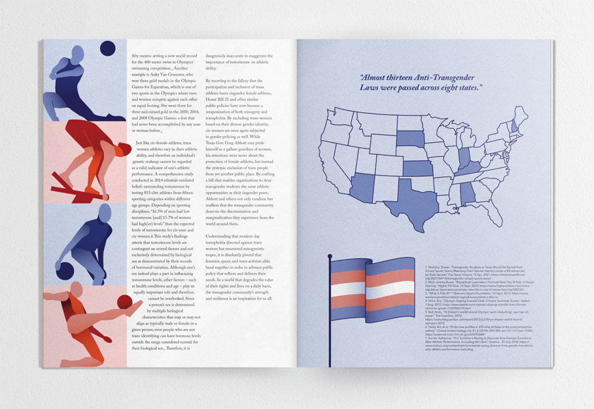
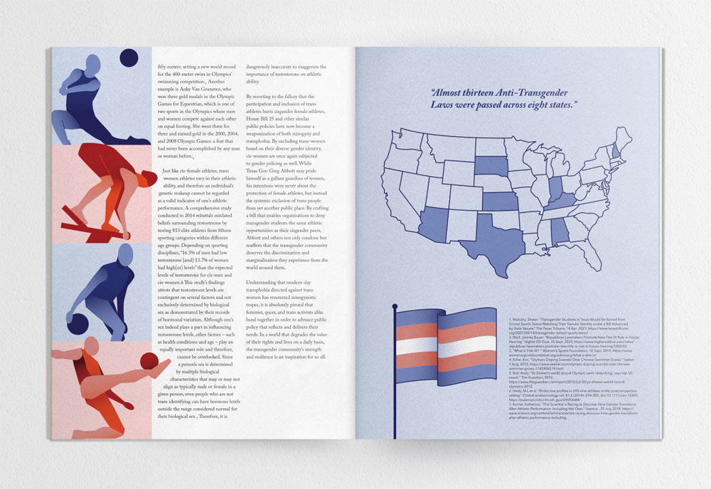

The Silence of Human Rights in Danger
Adobe Illustrator, Adobe InDesign
InPrint is a student-run organization publication addressing socio-political issues and current events. In their 6th Issue, “Revival”, I had the opportunity of designing a four-page spread for the article “Human Rights in Danger”, written by Elizabeth Woodhall criticizing the United States new laws banning transgender individuals from participating in athletics.